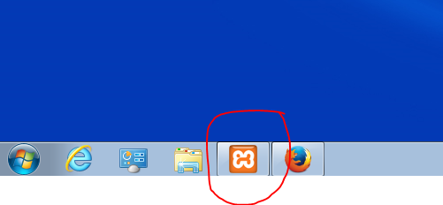
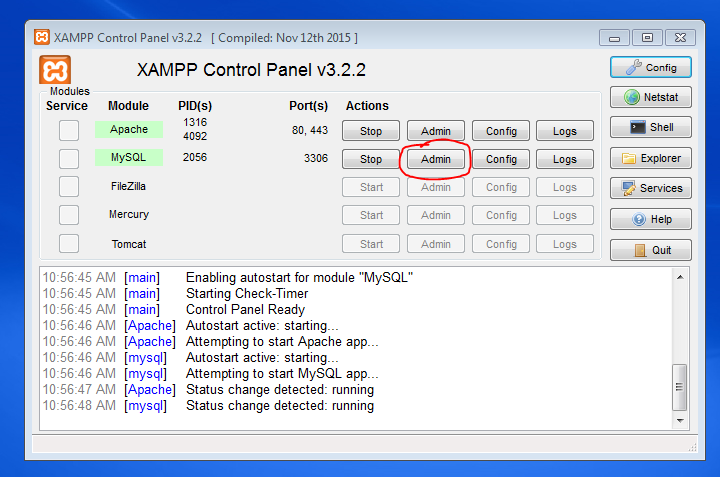
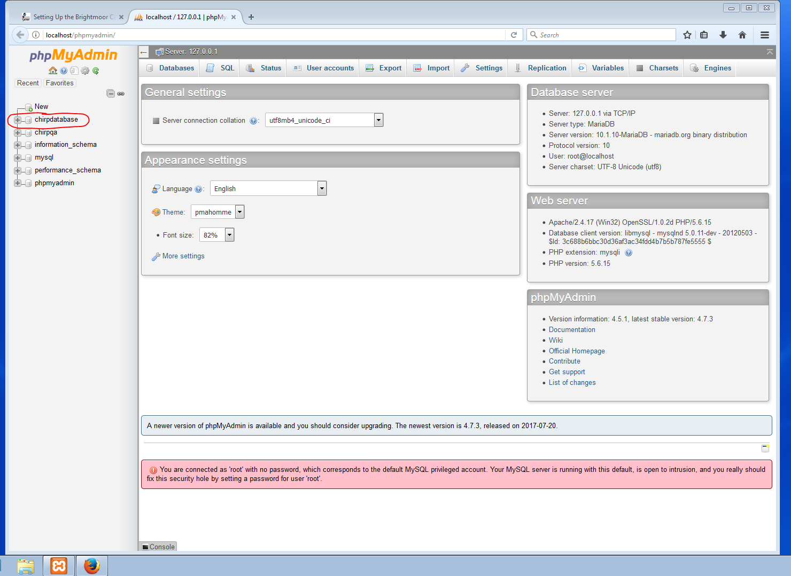
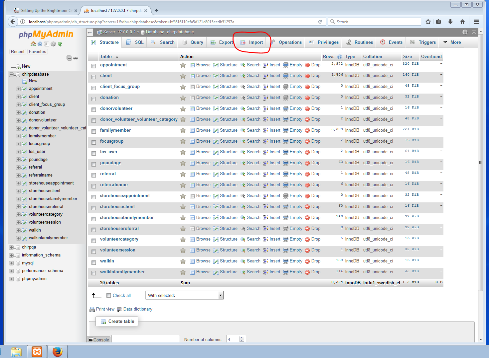
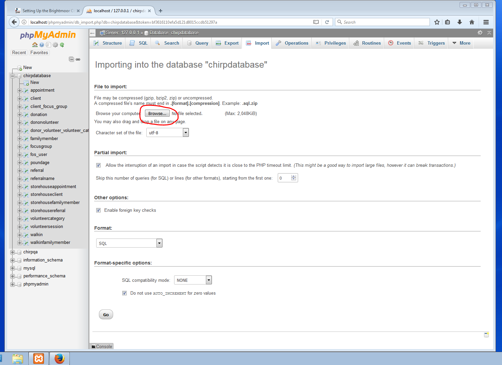
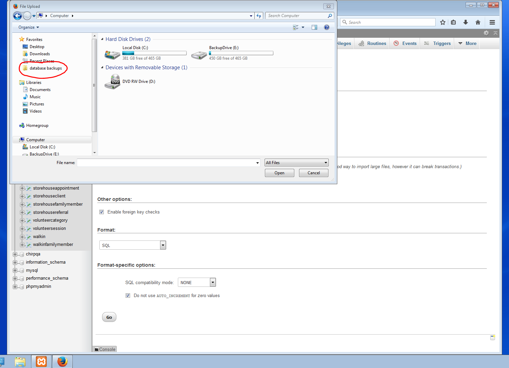
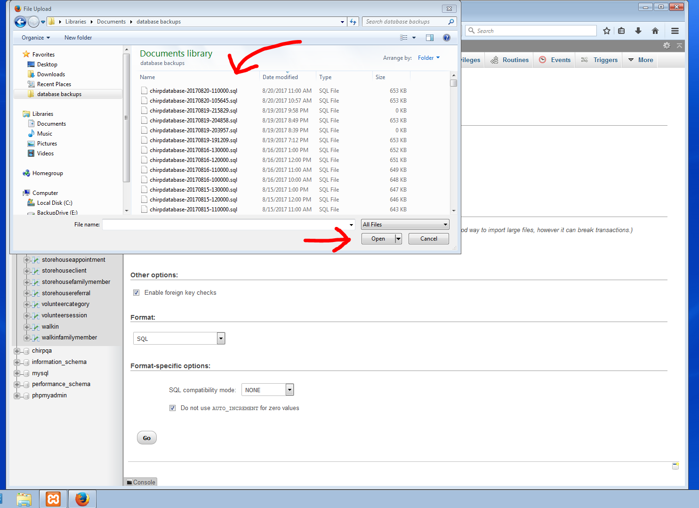
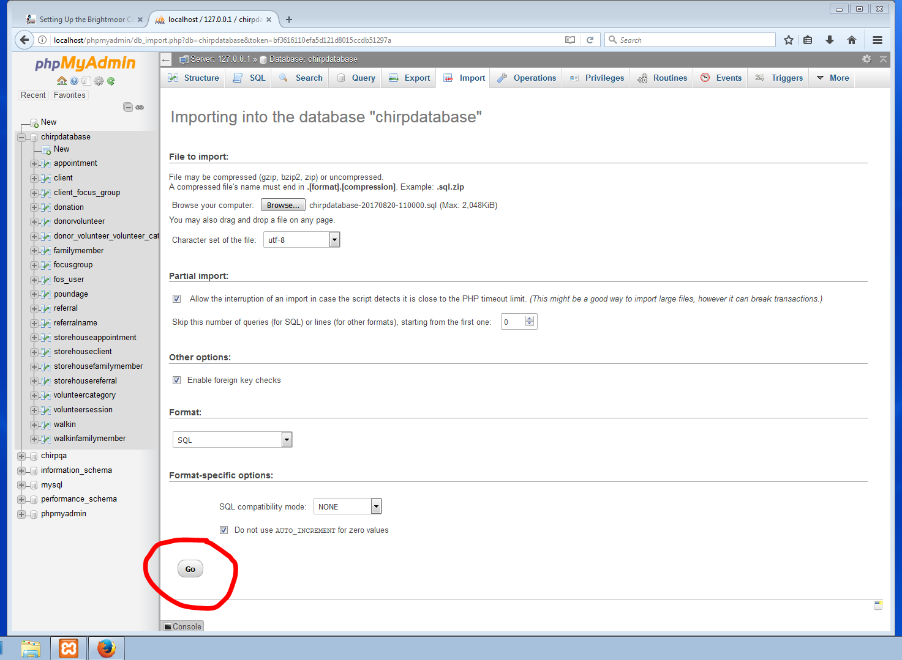
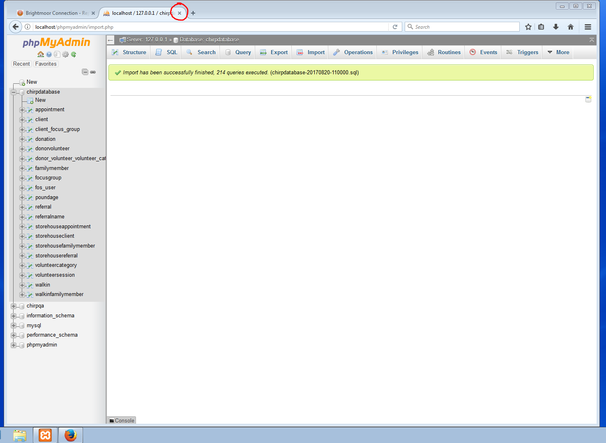

Brightmoor Connection Database Documentation
Restoring the database from a backup file
- Open the XAMPP Control Panel (click the orange logo on the dock)

- Click Admin in the MySQL row to open phpMyAdmin.

- Click on
chirpdatabase in the left hand column.

view full-size image
- Click Import on the top menu.

view full-size image
- Click the Browse button.

view full-size image
- Click the
database backups folder in the Favorites menu. You can also access this folder by going to Documents > database backups.

view full-size image
- Select the backup file you want and click Open. You can sort the backups by date, or read the file name to see the date and time the file was created.

view full-size image
- Once you have selected the file, scroll to the bottom of the phpMyAdmin screen and click 'Go'.

view full-size image
- After a few moments, you should see a success message. The import is complete; you can close the phpMyAdmin window and resume using the database. You will notice that the data is now from the backup file you just imported.

view full-size image